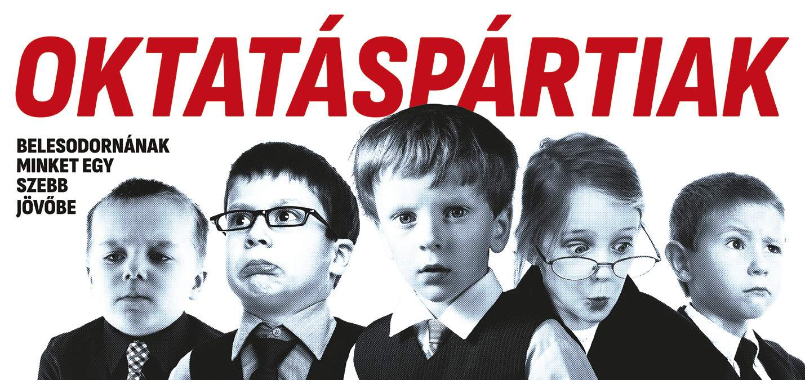
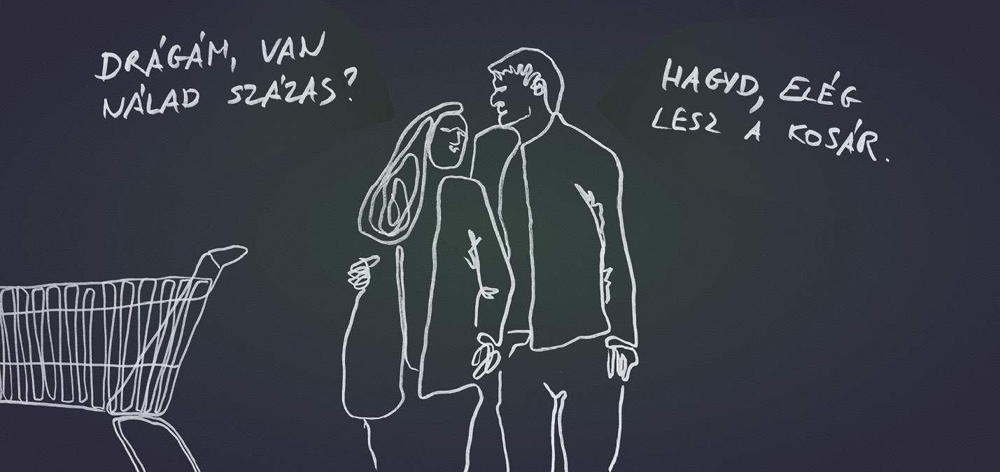
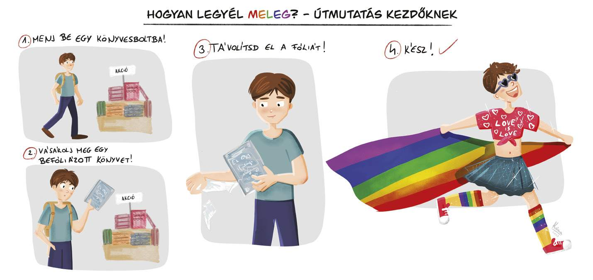

23. ARC közérzeti kiállítás
Megnyitotta kapuit a 23. ARC közérzeti kiállítás. Az idén 700 pályamunka érkezett be, melyek sorsáról 21 szakemberből álló zsűri döntött. Az általuk legjobbnak ítélt alkotásokért járó díjakat egy nyilvános díjátadón adták át az esemény megnyitóján, ahol Karácsony Gergely főpolgármester, Bakai-Nagy Zita, Újbuda alpolgármestere és Barabás Richárd alpolgármester is köszöntőt mondott. Újbuda immáron negyedik alkalommal ad helyszínt Magyarország legnagyobb és leglátogatottabb köztéri tárlatának. Büszkék rá, hogy ismét a Bikás parkban fogadhatják a szólásszabadság, a kritikai gondolkodás és a kulturális sokszínűség legjelentősebb szabadtéri „kiállítóterét” és vizuális alkotásait. A tárlat egy hónapon keresztül, szeptember 8-tól október 8-ig tekinthető meg éjjel-nappal.
A legjobb alkotásnak járó díjat Nagy Borbála „Oktatáspártiak” című alkotása kapta.

Második helyezett Hajsz Tibor „Súgd a fülembe azt”című képe lett.

Harmadik helyezést ért el Gallay-Nagy Krisztina „Útmutatás kezdőknek” című munkájával.

A kiállítás története
Az ARC óriásplakát-kiállítás - marketinganyagokban évek óta @®© formában írva - 2000 óta, a 2011-es évet leszámítva Budapesten megrendezett ingyenes közterületi plakátkiállítás. A kiállítás során a vizuális kultúra két meghatározó műfajának, a reklámnak és a képzőművészetnek az ötvözetében létrehozott, évről évre más tematika mentén készült óriásplakátokat - 5,04 × 2,38 méteres hirdetései felületen - állítanak ki. A pályázati kiírás szerint bárki nevezhet, a díjazottak zöme mégis általában reklámszakember vagy képzőművész. A kiállítás 2004-ben Budapest 4. legismertebb közterületi rendezvénye volt a városlakók körében a Budapest Parádé után, de még a Mesterségek ünnepe és a Budapesti Búcsú előtt. A megkérdezettek 71 százaléka tudott a rendezvényről. A plakátok rendre társadalomkritikus módon dolgozták fel a megadott témákat, és az évek során egyre politikusabbak lettek. Emiatt számos támadás érte a szervezőket, különösen, hogy Geszti Péterről közismert volt, hogy reklámügynöksége segítette a Szabad Demokraták Szövetsége kampányait. 1999-ben Bakos Gábor, Fatér Anna és Geszti Péter Arc Kft. néven céget alapítottak egy olyan kiállítássorozat szervezésére, melynek célja reklámcélú óriásplakát-felületek társadalmi üzenetek közvetítésére való felhasználása volt. A kiállítás 2000 és 2017 között a Városligetben kapott helyet. A Liget Budapest projekt munkálatai miatt 2018-ban és 2019-ben a XIV. kerületi Örs vezér útján állították fel a plakátokat. 2020 óta a XI. kerületi Bikás park ad otthont a kiállításnak. A program az első évben még mintegy hatmillió forintos támogatást kapott a Nemzeti Kulturális Örökség Minisztériumától, 2001-ben azonban már nem jutott erre pénz, a 90 milliós költségvetésből le kellett faragni néhány kapcsolódó szolgáltatás elhagyásával. 2001-ben a Budapest után Egerben is kiállított plakátok közül kettőt a szervezők utóbb letakartak, mivel Seregély István érsek szerint azok a vallásos emberek érzéseit sérthetik. 2003-ban csak a második nekifutásra kapták meg a területhasználati engedélyt Budapest Főváros Önkormányzatától, 2010-ben nehéz anyagi körülmények között, de még megvalósult a kiállítás, 2011-ben azonban támogatók hiányában elmaradt a rendezvény. Ekkor Geszti úgy nyilatkozott, hogy a médiatámogatások mellett is 10-15 millió forintot tesz ki a "válságköltségvetés", ám ha ekkora összeget sem tudnak előteremteni, akkor nincs értelme belevágni a szervezésbe. A kiállításról évről évre elhangzik, hogy kifulladt, közhelyesek a plakátok, ennek ellenére stabilan ezer körüli pályázó munkáiból válogatják össze azt az ötvenet, százat, melyek a kiállításon megtekinthetők.
Oldal tetejére!